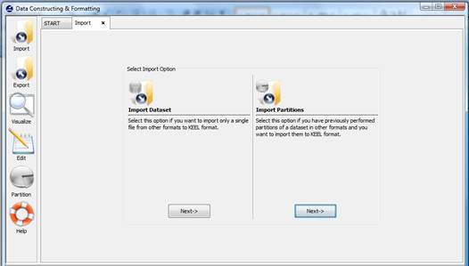
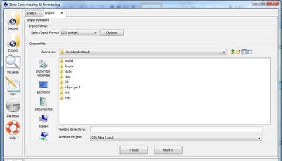
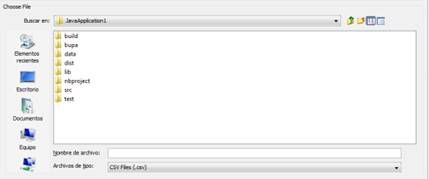
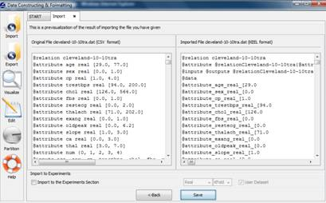
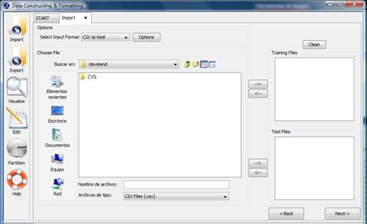
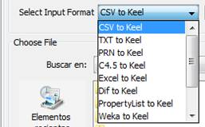
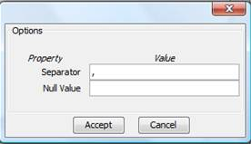
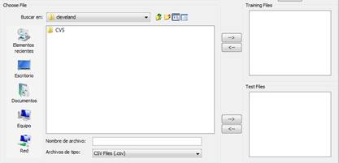

Figure 3. Format admitted to convert to KEEL format.
DATA IMPORT
Import option allows you to transform your files in different formats (txt, excel, xml, etc.) to KEEL format. Notice that if you want to use your own Data Sets, the design of the experiments will only use Data Sets according to KEEL format, therefore a previous step of import will be required.

Figure 1. Two possibilities to carry out the import process.
Figure 1 shows the two possible options to import data sets. One option consists of importing one data set, the other option consists of importing a set of partitions which you have available in other formats different to KEEL format. In continuation, we show the process of both options.
Option 1: Import Dataset. Select this option if you want to import only a single file from other formats to KEEL format. Figure 2 shows the window to this option.

Figure 2. Import Dataset option.
To import a data set, it is necessary the next parts:
Step1: Select Input Format. First of all, you must select the source file format of the dataset. The format admitted are CVS, TXT, PRN, C4.5, Excel, Dif, PropertyList and Weka. The different options are shown in Figure 3.
Figure 3. Format admitted to convert to KEEL format.
The "Options" button allows you to configure if it is necessary a certain separator and null value used in the source file.

Figure 4. Specify certain options of format of source file.
Step2: Select the source file. After specifying the file format used in source file, the path of this file must be specified (a browser commonly known from many other GUI programms is used to define this path).

Figure 5. Specify the source file path.
Step 3: Save the files. Once the type of conversion and the source file have been configured, you must click Next button and then, the original and the imported file are shown (see Figure 6).

Figure 6. The original and imported file.
If we agree with the conversion done, there are two options to save the imported file:
- Select the Import to the experiments section: if you mark this option and click the Save button, the data set converted will be included as option in the KEEL experiments. This data set will be available to execute with the methods of KEEL.
- Not select the Import to the experiments section: if you do not select this option, when you click the Save button, you have to select the destination directory for the transformed data set.
Option 2: Import Partitions. Select this option if you have previously performed partitions of a dataset in other formats and you want to import them to KEEL format. This option allows to select a set of training and test files separately. Figure 7 shows the window with respect to this option.

Figure 7. Import Partitions option.
To import partitions, it is necessary the next parts:
Step1: Select Input Format. First of all, you must select the source file format of the dataset. The format admitted are CVS, TXT, PRN, C4.5, Excel, Dif, PropertyList and Weka. The different options are shown in Figure 8.

Figure 8. Format admitted to convert to KEEL format.
The "Options" button allows you to configure if it is necessary a certain separator and null value used in the source file.

Figure 9. Specify certain options of format of source file.
Step2: Select the source file. After specifying the file format used in source file, the path of this file must be specified. You have to use the arrows to include the files in training or test properly.

Figure 10. Specify the source file paths.Step 3: Save the files. Once type of conversion and source file have been configured, you must click Next button and the original and the imported file are shown (see Figure 11).

Figure 11. The original and imported file.
If we agree with the conversion done, there are two options to save the imported file:
- Select the Import to the experiments section: if you mark this option, two new options are available. With this option you configure if the data set is a real or laboratory data set and the partitions that you are used. Two partitions are applicable: k fold or 5x2 cross validation. Then, when you select the save button, the data set that you are converted will be included as option in the KEEL experiments.
- Not select the Import to the experiments section: if you do not select Import to the experiments section, when you click the save button, you have to select the destination directory for the transformed data sets.